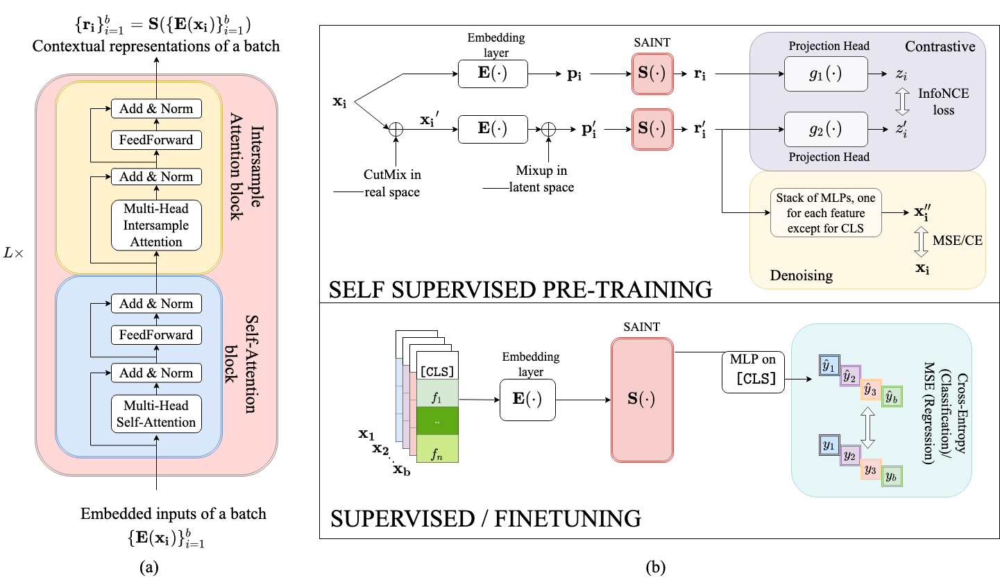

Welcome to SAINT Lightning’s documentation!
Saint Lightning
This repository contains an implementation of SAINT using Pytorch-Lightning as a framework and Hydra for the configuration. Find the paper on arxiv
How to install
pip install lit-saint
Network Architecture
There are also contrastive self-supervised pre-training methods that can be used when labels are scarce.
How to Use it
Create an yaml file that contains the configuration needed by the application or use default values
Create an instance of SaintConfig using Hydra
Create the Dataframe that will be used for the model. In order to split correctly the data, you need to add a new column where you assign the label “train” to the rows of the training set, “validation” for the ones of the validation set and “test” for the testing one
data_module = SaintDatamodule(df=df, target="TARGET", split_column="SPLIT", pretraining=True)
Create an instance of SaintDataModule and SAINT
model = SAINT(categories=data_module.categorical_dims, continuous=data_module.numerical_columns,
config=cfg, pretraining=True)
Use the Trainer defined by Pytorch lightning to fit the model
pretrainer = Trainer(max_epochs=10)
pretrainer.fit(model, data_module)
After the pretraining, you can train the model using a supervised objective function
model.pretraining = False
data_module.pretraining = False
trainer = Trainer(max_epochs=10)
trainer.fit(model, data_module)
Then you can define the data for the prediction step
data_module.set_predict_set(df_test)
prediction = trainer.predict(model, datamodule=data_module)
df_test["prediction"] = torch.cat(prediction).numpy()
How to Generate Yaml
from lit_saint import SaintConfig
from omegaconf import OmegaConf
conf = OmegaConf.create(SaintConfig)
with open("<FILE_NAME>", "w+") as fp:
OmegaConf.save(config=conf, f=fp.name)
Credits
We would like to thank the repo with the official implementation of SAINT: https://github.com/somepago/saint